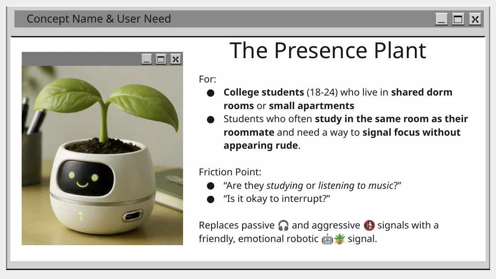
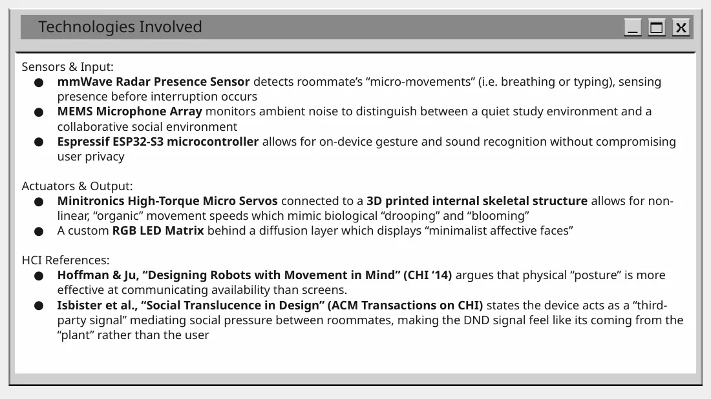
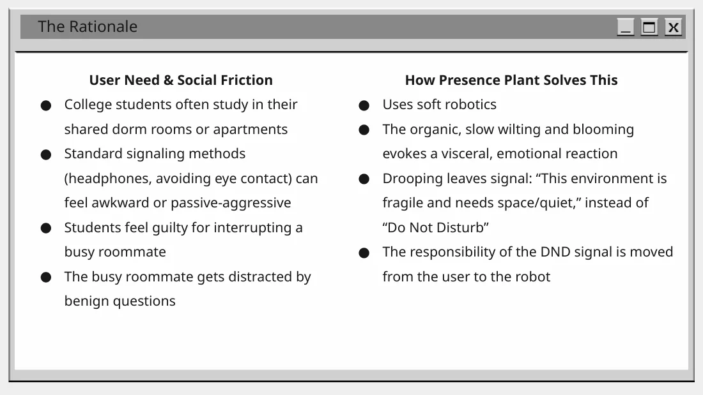
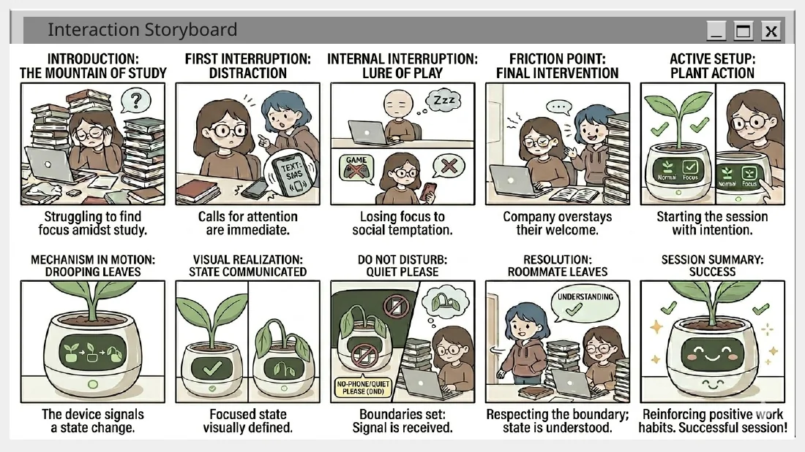
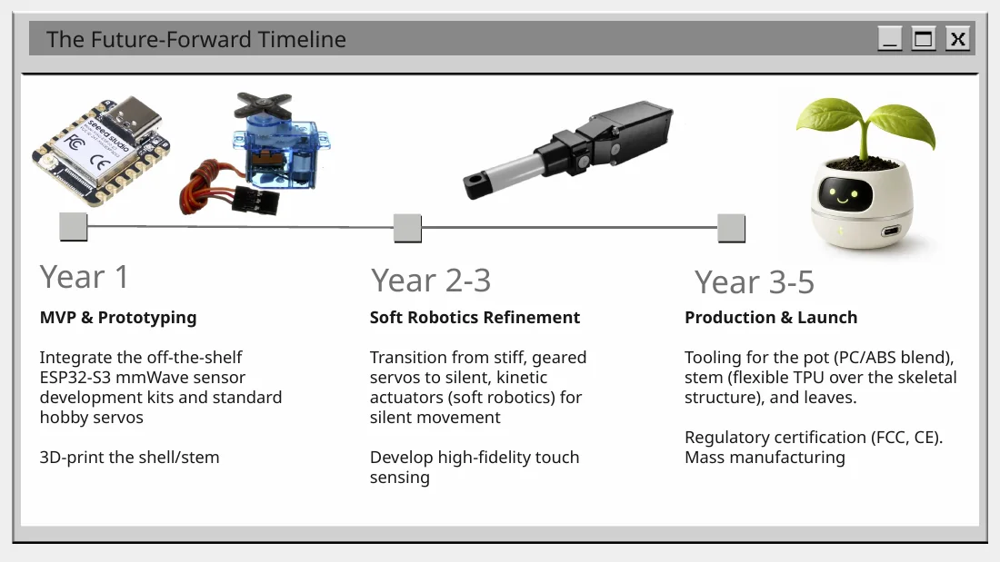

User need
Students sharing dorm rooms or small apartments need a low-friction way to communicate focus without seeming rude.
Human-Computer Interaction + Robotics
Ambient robotic desk companion concept that communicates focus and availability through friendly, organic movement instead of harsh Do Not Disturb signals.

Students sharing dorm rooms or small apartments need a low-friction way to communicate focus without seeming rude.
Drooping/blooming movement and a simple expressive face shift the social signal from the person to the device.
Focus-driven, socially minded, tech-native college students working in shared residential spaces.
Concept sensors included mmWave presence sensing and a MEMS microphone array for ambient context.
An ESP32-S3 was proposed for local processing, with micro servos and a diffused RGB LED matrix for organic motion and affective feedback.
The project explored physical posture/movement and social translucence as alternatives to static signs or app-based status.
Project archive
This material stays inside the case study so the main portfolio pages remain clean.




